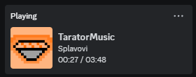
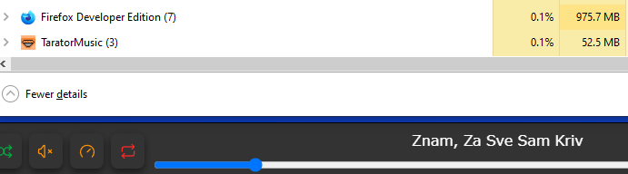
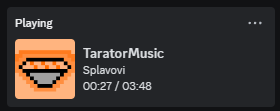
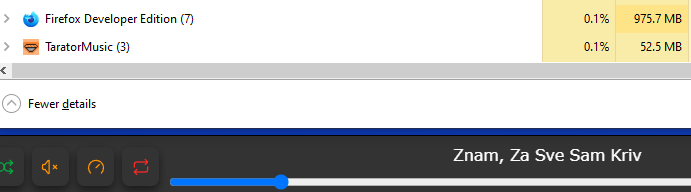

Aren't you tired of listening to same ten songs in your youtube or spotify playlist? Too many ads? What if you want to listen to music offline? This app runs to your aid...
Actual Random
The randomness of the next song in TaratorMusic has been statistically proven by Chi Square Test. In the test, 10,000 random songs have played after each other, and the test was successful even at 0.01 significance level.
Download Your Own
In this app, you can easily paste a link in the download section, change its name or thumbnail, and press download to make the music and its thumbnail appear in your folders. Works for playlists too! Or you can just carry your own mp3 files to the musics folder.
Customisation
You can customise everything starting from the app itself, the musics and the playlists. The music files and the playlists can be renamed, and get their thumbnails changed inside the app. The settings tab has a high variety of options on how to change user experience.
Discord
This app is connected to Discord via Rich Presence. Thus everyone can know you are using TaratorMusic, and what song you are listening to. Although its easily toggleable inside the settings tab if you don't want it.
Memory Efficiency
TaratorMusic only uses 75MB per second of memory while open, 95MB per second while listening to a song, and 125 MB per second while downloading a song. The lightweightness of the app makes it suitable for computers with very low specs. Warning: adding more songs will increase the weight, these values were taken with 0 songs.

 


